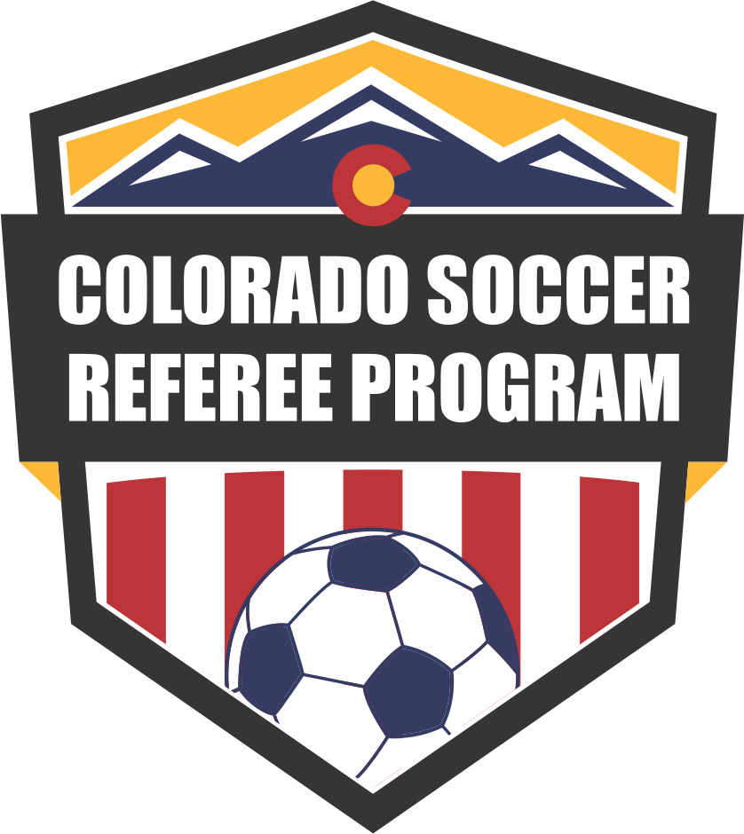

Colorado SoccerEverything a Colorado referee needs, from your first whistle to the national pathway. Run by the Colorado Soccer Association's Referee Department.
Your 2026 license ends December 31. Renew in the US Soccer Learning Center now and keep your place on the assigning lists.
Open the Learning Center › The HubYour games, check-in at the venue, help one tap away, your feedback and your card, fitness tests and evaluations. Sign in with your email and add it to your home screen.
Open the Hub › The LibraryThe 2026/27 Laws of the Game in plain words, the CSA referee guide, league rules, and a tutorial for the Hub. English and Spanish.
Open the Library › Field mapsEvery field at the venue, from your phone. Scan the QR code at the entrance, or open the map and pick your venue.
Open the maps › CREST AcademyReferee certification as a school elective: nine weeks from the first Law to a first game weekend, with US Soccer's Learning Center.
About the Academy › Become a refereeNew to refereeing? The step-by-step guide covers the Learning Center account, the Colorado course, the field session and your first assignments.
Read the sign-up guide ›Refereeing in Colorado is a road, and every stop on it lives here.
Pages for the clubs CREST works with.